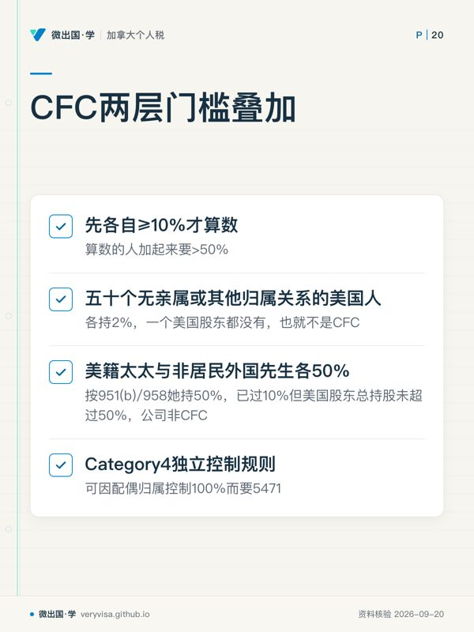
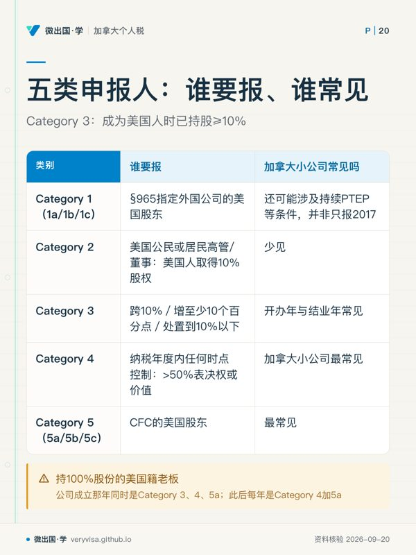

核实日期：2026-09-05｜本页现行口径＝2026 税年（公司纳税年度开始于 2025-12-31 之后的那一年）。 复核周期：2027-01-31。理由是 2026 年这一批国际条款刚生效，配套条例与表格正在换版；名称、扣除比例、抵免比例三个数都在换版窗口里。 法条一律指向美国法典 (United States Code) 与 2025 年 7 月 4 日签署的 Public Law 119-21 原文；表格口径指向美国国税局 (Internal Revenue Service, IRS) 的现行表格指引；加拿大一侧的税率指向加拿大税务局 (Canada Revenue Agency, CRA) 与卑诗省财政厅现行页。
这一页写给一类很具体的人：持美国公民身份或绿卡、人住在加拿大、名下有一家自己开的加拿大公司——多半是一家加拿大控股私人公司 (Canadian-controlled private corporation, CCPC)，用来接咨询费、装小生意，或者纯粹放钱。这类人每年在加拿大按部就班报 T2，从没觉得公司这件事和美国有关系。事实是：公司在加拿大交没交税，和你在美国要不要报、要不要补税，是两个独立的问题。 读完这一页你应该能做到三件事：判断自己落在 Form 5471 的哪一类申报人、要交哪几张附表；说清 2026 税年那笔改了名的并入额是怎么算出来的、什么时候真会产生美国税；以及回答那个最贵的问题——为什么恰恰是加拿大最优惠的那档公司税率，会在美国这一侧给你留下一笔税。
✕
先记住这三条，本页其余内容都挂在它们上面
第一，Form 5471 是信息申报，不是税表；但漏掉它的代价按税表算。 每家外国公司每个会计期起罚 $10,000，通知满 90 天后每 30 天再罚 $10,000、追加部分封顶$50,000；同时可抵外国税削减 10%，逾期再每 3 个月加削 5%（IRS）。更贵的是 §6501(c)(8)：必要信息未齐可延长评税时效，合理理由且非willful neglect时仅相关项目，要等信息补齐之日起满 3 年才届满（U.S. Government Publishing O…）。 第二，不作分红也可能要交税。 自 2018 年起，受控外国公司 (controlled foreign corporation, CFC) 的当年利润会按比例视同并入美国股东的收入，与公司有没有分红无关。2026 税年这项收入改名为「受控外国公司净测试收入」(net CFC tested income, NCTI)（U.S. Government Publishing O…）。 第三，个人默认拿不到公司缴的加拿大税作抵免。 §901 只抵你本人缴的税；公司缴的那笔要靠 §962 选举，走 §960 的视同已付抵免才拿得到（IRS）。不作选举的人，往往就是那个「公司在加拿大交了 11% 却在美国按 37% 再交一遍」的人。
一、制度设计与底层逻辑：一条防递延的规则，扫到了一批不是它目标的人
1.1 这条规则要防的是什么
美国对本国人的全球所得征税，但一家外国公司是另一个纳税主体。在 1962 年之前，把利润留在外国公司里不分红，美国这一侧就一直不用交税——这叫递延 (deferral)。1962 年的 Subpart F 立法开了第一个口子：把利息、股息、租金、特许权使用费这类流动性最强、最容易随便挪到低税地的被动收入，不管分不分红都当年并入美国股东的收入。逻辑是：这类收入和公司在哪里注册没有实质关系，纯粹是选址的结果，所以不给递延。
1962年同时设立§956：公司把钱借给美国股东、或者投到美国财产上，视同已经把钱拿回美国，也并入。2017 年的减税与就业法则把口子开到底：一方面用 §965 过渡税把 1986 至 2017 年积下的未税境外利润一次性拉出来算账，另一方面新设 §951A，把 CFC 的经营利润也纳入当年并入的范围。至此，递延对 CFC 基本不存在了。
这套规则的目标是跨国集团，不是住在温哥华的牙医。 但法条上的美国股东定义不区分二者：只要你是美国人、持股到线，规则照样适用。这就是本页读者的处境——一套为跨国税基侵蚀设计的机制，落在了一家年利润二十万加元的小公司头上。
1.2 三个概念，判定顺序不能颠倒
第一步判「美国股东」(U.S. shareholder)。 美国人（公民、绿卡持有人、税务居民，以及美国合伙企业、公司、非外国的遗产与信托）按 §958(a) 的直接与间接持有、加上 §958(b) 引入的 §318 推定持有，合计持有一家外国公司 10% 或以上的表决权或价值，就是美国股东（IRS）。不到 10%，不是。

第二步判「受控外国公司」。 一家外国公司，如果在其纳税年度的任何一天，全体美国股东合计持有超过 50% 的表决权或价值，它就是 CFC。注意两层门槛叠加：先各自 ≥10% 才算数，算数的人加起来要 >50%。一家公司由五十个无亲属或其他归属关系、各持2%的美国人持有，一个美国股东都没有，也就不是 CFC。
第三步才判申报义务与并入义务。 前两步的结论决定你落在哪一类申报人、要不要算 NCTI。
归属须按具体制度核。§318家庭成员列配偶、子女、孙辈、父母，不列祖父母；§958(b)排除非居民外国人家庭股份向美国公民/居民归属，适用于951(b)美国股东与CFC判断两步。Category4按6038控制规则另判，不把两步说成一开始归属、下一步撤掉（IRS）。
例如美籍太太与非居民外国先生各50%，按951(b)/958她持50%，已过10%但美国股东总持股未超过50%，公司非CFC。在Category4独立控制规则下可因配偶归属控制100%而要5471；这是不同法条的归属范围不同。
1.3 为什么不能「勾选穿透」把整件事绕过去
熟悉美国税的人第一反应通常是：填一份 Form 8832 把这家公司选成穿透实体，利润直接算成我个人的，不就没有 CFC 了？对普通的加拿大公司，这条路不存在。
美国税法把外国实体分成两类。一类是「当然公司」(per se corporation)——列在 26 CFR 301.7701-2(b)(8) 的清单上，天生就是公司，不是合格实体，不能做分类选举。清单里加拿大那一行写的是「Corporation and Company」（eCFR (GPO / National Archives)）。你在卑诗省公司法或联邦公司法下注册的那家公司，正好落在这一行里。另一类是「合格实体」(eligible entity)，可以用 Form 8832 选，也可以走默认分类。
加拿大有两种实体恰好走在这条界线的两侧，值得一并记住：
无限责任公司 (unlimited liability company, ULC)，只有艾伯塔、卑诗、新斯科舍三省有。条例对加拿大明文开了一个例外：全体股东负无限责任的公司或商号，排出当然公司清单（eCFR (GPO / National Archives)）。于是它是合格实体，按默认分类，单一股东的成为被忽略实体（美国这边报 Form 8858），两名以上股东的成为合伙（报 Form 8865）；这是未作其他有效选举时的默认分类，也可有效选为公司后再核5471。
有限责任合伙 (limited liability partnership, LLP) 走的是反方向。它在加拿大法下是合伙，报 T5013；但美国这一侧按 26 CFR 301.7701-3(b)(2)(i)(B)，外国合格实体若全体成员均为有限责任，默认归类为公司。须先核成员对实体债务的实际责任，不能单凭LLP名字认定全体有限责任；若默认公司且持股等触线才核5471，除非另做 Form 8832 选举改回合伙。
⚠️
「实体在加拿大叫什么」和「它在美国算什么」经常对不上
名字里有 corporation 的可能在美国是合伙（ULC），名字里有 partnership 的可能在美国是公司（LLP）。判定顺序永远是：先看当然公司清单，不在清单上才谈默认分类与 Form 8832。从加拿大的实体名称直接推美国的申报表，是这一节最常见的错误。
1.4 错报的法律后果
信息申报的罚则不看你欠不欠税。漏交或少交 Form 5471：§6038(a) 项下每家外国公司每个年度会计期 $10,000；IRS 寄出通知满 90 天后仍未补，每 30 天（不足 30 天按 30 天算）再加 $10,000，追加部分封顶$50,000。§6046 项下（Schedule O 那类股权变动申报）另有一套同样数额的罚则。此外 §6038(c) 直接削减你可用的外国税收抵免：先削 10%，逾期后每 3 个月再削 5%（IRS）。
真正让人补不起的是时效。§6501(c)(8) 写得很直白：只要 §6038、§6046 项下应报的信息没报齐，与该信息相关的纳税年度的评税时效，在信息补齐之日起满 3 年之前不届满；若漏报出于合理原因而非故意疏忽，延长只及于与漏报相关的项目（U.S. Government Publishing O…）。换句话说，一张 2014 年的报税表，只要当年该报的 Form 5471 没报，到 2026 年仍然可以被查、被补税、被罚。不能由年头久就认定时效届满，其他国际信息表也有类似条文。
二、2026 税年现行规则与数字
2.1 五类申报人：住在加拿大的小老板通常同时落两类
Form 5471 现行指引（2025 年 12 月版）把申报人分成五个大类、九个细类（IRS）。用一句话各说清楚：
| 类别 | 谁要报 | 加拿大小公司常见吗 |
|---|---|---|
| Category 1（1a/1b/1c） | §965 指定外国公司的美国股东 | 还可能涉及持续PTEP等条件，并非只报2017 |
| Category 2 | 外国公司的美国公民或居民高管/董事，遇到某个美国人取得 10% 股权 | 少见 |
| Category 3 | 取得跨10%或后续再增取得至少10个百分点、处置到10%以下、或本人成为美国人时已持股 ≥10% | 开办年与结业年常见 |
| Category 4 | 在本人纳税年度内的任何时点控制该外国公司（>50% 表决权或 >50% 价值） | 最常见 |
| Category 5（5a/5b/5c） | CFC 的美国股东 | 最常见 |
一位持 100% 股份的美国籍老板，在公司成立那年同时是 Category 3、4、5a；此后每年是 Category 4 加 5a。a/b/c 的细分只在「外国控制」的结构里才用得上：b 是与外国控制方无关联的 §958(a) 持有人，c 是有关联的推定持有人。
ℹ️
2.2 CFC 的收入并入：四条通道，2026 年动了第四条
| 通道 | 起于 | 管什么 | 加拿大小公司的典型触发 |
|---|---|---|---|
| Subpart F 收入 | 1962 | 被动与基地公司收入 | 公司账上的定存利息、持有的股票股息、非经营性租金 |
| §956 并入 | 1962 | 公司投到美国财产上的收益 | 对美国股东借款等须核，直接美国国债属于明确排除 |
| §965 过渡税 | 2017 | 1986–2017 积存的未税利润 | 2017或跨年2018首次并入，后续分期/PTEP等仍可能涉及 |
| NCTI（原 GILTI） | 2018 | 除上述以外的经营利润 | 咨询费、服务费、正常生意的净利润 |
Subpart F 有两道门，方向相反，而中间那一段才落进 Subpart F。 门一是最低限度规则：被动与基地公司收入合计，低于「毛收入的 5%」与「$100 万」两者取小的，全不算 Subpart F（IRS）。门二是全额并入规则：合计超过毛收入的 70% 的，整个毛收入都当 Subpart F。只有落在 5% 与 70% 之间的那部分被动收入，才按 Subpart F 处理；低于 5% 的那部分改走 NCTI 通道。
⚠️
考试口径常把最低限度规则简写成「5% 规则」，漏掉 $100 万那一半
现行指引的原文是「the lesser of 5% of gross income ... or $1 million」（IRS）。对一家毛收入 $3,000,000 的公司，5% 是 $150,000，$100 万更大，取小者仍是 $150,000——此时两种写法结论一样。但对毛收入 $40,000,000 的公司，5% 是 $200 万，取小者是 $100 万，只按 5% 算会把结论算反。加拿大小公司很少撞上，但这是考试口径里最爱设的陷阱之一，而且 $100 万这个数是法定值，从不指数化。
2.3 2026 税年最大的变化：GILTI 改名，三个参数同时动
这是本页的核心三列表。三件事写在同一部法案的相邻几节里，只看其中一件会得出相反结论：
| 项目 | 2024 税年（考试口径） | 2025 税年 | 2026 税年（现行） | 状态 |
|---|---|---|---|---|
| 法条名称 | Global intangible low-taxed income (GILTI) | 同 | Net CFC tested income (NCTI)，§951A 标题同改 | 已生效（U.S. Government Publishing O…） |
| 有形资产免税回报 | 合格营业资产投资 (QBAI) × 10% 减利息，可从净测试收入里减掉 | 同 | 整条删除，§951A(b) 与 (d) 被划掉、(c)(e)(f) 顺次改号 | 已生效（U.S. Government Publishing O…、IRS） |
| §250(a)(1)(B) 扣除比例 | 50% | 50% | 40% | 已生效（U.S. Government Publishing O…、IRS） |
| 做 §962 选举后的有效税率 | 21% × 50% ＝ 10.5% | 10.5% | 21% × 60% ＝ 12.6% | 已生效（推算自上一行） |
| §960(d)(1) 视同已付抵免 | 外国税的 80% | 80% | 90%；§78仍加回100%对应外国税，计算时忽略90%折减 | 已生效（U.S. Government Publishing O…） |
| 简式打平点（加拿大有效税率） | 10.5% ÷ 80% ≈ 13.125% | 同 | 12.6% ÷ 90% ＝ 14% | 推算；见下方说明 |
| §904(b) 费用分摊 | 利息与研发费用按资产比例摊到该篮 | 同 | 不摊；其他扣除仅在直接可归属时才摊 | 已生效（U.S. Government Publishing O…） |
| §958(b)(4) 向下归属限制 | 已废（2017 年起） | 同 | 恢复；另设 §951B 兜底 | 已生效，按外国公司纳税年度算（U.S. Government Publishing O…） |
| FDII 一侧（对照） | 37.5%，名为 foreign-derived intangible income | 同 | 33.34%，改名 foreign-derived deduction eligible income | 已生效（U.S. Government Publishing O…） |
三件事的合力方向要分开看。删掉免税回报是加税：过去一家有厂房设备的加拿大公司，可以先把符合条件资产经调整税基的10% 当作「正常回报」剔除在并入之外，现在剔不掉了，全部测试收入都进基数。扣除从 50% 降到 40% 是加税：有效税率从 10.5% 升到 12.6%。抵免从 80% 提到 90% 是减税，而且 §904(b)(5) 不再把利息与研发费用摊到这一篮，等于减少该类别分摊扣除对限额的压缩、让更多抵免用得出去。
§78的完整句子要求忽略“90 percent of”，所以对应外国税加回仍为100%，并非90%。在同一税前利润、全额合格外国税、无额外费用/损失或限额影响的简化例，2026税额＝税前利润×21%×60%−外国税×90%；打平点14%。不是13.8%。实际还须核250应税收入限制、904类别与币种差异，14%也不能作为任意公司自动零税保证（uscode.house.gov）。
2.4 §962 选举：个人拿到公司税抵免的唯一门
个人按 §901 只能抵自己缴的外国税。公司在加拿大缴的那笔 T2 税款，不是你缴的，默认一分抵不到。这就是不作选举时的真实处境：并入额按你的个人边际税率课税（最高 37%），一分抵免都没有。
§962 允许个人选择「就这块并入额按公司税率课税」。做了选举之后，三件事同时打开（IRS（1、2））：
按 §11 的 21% 而不是个人税率计税；可以填 Form 8993 拿 §250 扣除（2026 税年 40%）；可以按 §960(d) 主张 CFC 缴的加拿大税的视同已付抵免（2026 税年 90%），用 Form 1118 而不是 Form 1116 算限额。选举的做法是随报税表附一份 26 CFR 1.962-2 要求的声明，逐年做、逐年附。
✕
§962 不是免费的：那笔钱以后真分回来时，还要再交一次
§962(d) 的机制是：当年按公司税率交一笔较低的税，以后这块已计税利润 (previously taxed earnings and profits, PTEP) 真分配到你手里时，超过当年已缴 §962 税款的部分要作为股息再计一次。加拿大是与美国有全面所得税协定的国家，加拿大公司通常属于合格外国公司，这笔股息有可能按合格股息的 0%/15%/20% 优惠税率计税（IRS（Treasury 条约文本））——但已计税利润分配能不能算合格股息，实务上有过争议，规划前要单独确认，不要当成定论。无论按哪一档，它确实是第二层税。 更麻烦的是 2026 年新增的 §960(d)(4)：对已按 §951A 计过税的收益在分配时缴的外国税，有 10% 不得抵免（U.S. Government Publishing O…）。生效不能只看外国税付款日。Notice2025-77及2026拟议规则按产生该PTEP的951A并入是否在股东结束于2025-06-28之后税年发生来区分，拟议依赖须整体一致（irs.gov）。 所以 §962 的正确定位是：它把税从「现在按 37% 全交」变成「现在按 12.6% 减抵免、将来分红时按股息率补一层」。无论留存或很快分红，都须计算当前并入及将来962(d)分配两层合计，不能只凭持有期限推荐。
2.5 高税豁免：另一条路，门槛比打平点还高
§954(b)(4) 的高税例外，在 GILTI 一侧由 26 CFR 1.951A-2(c)(7) 落实：某项试算测试收入所承担的外国有效税率高于 §11 最高税率的 90%，即高于 18.9%（21% × 90%），就可以选择把它整个排除在测试收入之外——不进基数，也就没有并入（eCFR (GPO / National Archives)）。
两个限制条件要一起记。它不是自动的：必须由控股股东按 §1.951A-2(c)(7)(viii) 逐年做选举，且选了就对该 CFC 当年的全部合格项目一体适用。按tested unit及同国合并等规则测有效税率，不是任意按加拿大SBD税阶切两段。
高税例外的现行规章见eCFR (GPO / National Archives)。2026法定NCTI名称与子条款重编号后须继续核配套规则，不能用“全文搜索某串零命中”单独证明法律没有修改。控股股东选举、一致适用及testedunit合并条件仍须执行。
2.6 §962 之外的两条路，往往更该先算
第一条：把利润从公司里挪出来，别让它变成测试收入。 公司给你发薪水或管理费，是公司的可扣支出，压低了当年利润，也就压低了 NCTI 基数；对应地，你个人拿到的是境外劳务所得，可以走 Form 2555 的排除或 Form 1116 的抵免处理（判据见 us-intl-01-feie-ftc）。加拿大一侧要同时算工资对源头扣缴、加拿大退休金计划供款、以及小企业扣除的影响（见 ca-corporate-03-salary-vs-dividend）。这条路的好处是它把问题挪到了一个你已经有成熟工具的地方。
第二条：分红，另算股东层面税。普通股息不是公司扣除，不能像工资那样减少当年测试利润，也不消除同年SubpartF/NCTI。 公司真分红给你，那是一笔外国来源股息；加拿大对本国居民股东的股息不预提税，但你在加拿大个人层面缴的税可以按 §901 抵。这条路的代价是加拿大个人税率高、且股息在加拿大有毛额化与股息抵免的一整套机制，两国口径差得远。它通常不是首选，但对准备清算或退出公司的人是绕不开的一步（见 ca-corporate-04-shareholder-loans-s85-abil-windup）。
三种处理（§962、合理可扣工资、另算分红）不是互斥的，实务上多半是组合。要先算再选，而且要按年重算——2026 税年那三个参数一起动之后，2025 年算出来的最优解不一定还成立。
三、实务流程：从 T2 财报到 Form 5471 的六步
第一步，定纳税年度与到期日。 Form 5471 随 1040 报送，到期日跟着 1040 走，包括延期（IRS）。符合海外居住工作等法定条件的报税人获得延到 6 月 15 日的两个月延期，再申请可到 10 月 15 日（IRS）。注意 2026 税年起的一条新限制：对2025-11-30之后开始的指定外国公司税年取消一个月递延选举；短税年及外国税配比另核（IRS）。多数加拿大小公司的年结日不是 12 月 31 日，公司年度与个人年度错开是常态，持续持股的常见情况看公司年结，但2026起SubpartF/NCTI按持股期间且将并入放到包含本人该CFC年度最后持股日的股东年度；出售中途不能继续机械套公司年结。
第二步，取加拿大侧的原始凭证。 公司的财务报表（提交 T2 时那套通用财务信息 GIFI 数据）、T2 正表与附表、当年实缴的联邦与省公司所得税、股东往来账明细。这些直接喂进 Form 5471 的 Schedule C（损益表）、F（资产负债表）、E/E-1（已缴外国税与追踪）、M（与股东及关联方的往来）。
第三步，做汇率折算。 现行指引要求所有汇率按「除法惯例」(divide-by convention) 报，即报「1 美元等于多少加元」，至少保留四位小数（IRS）。Schedule E 的已缴税款一般用 §986(a) 的平均汇率。位数不够导致实质失真的，会被视为报错。
第四步，把加拿大会计利润调成美国税法上的收益与利润 (earnings and profits, E&P)。 这是全流程最花时间也最容易被跳过的一步。加拿大的会计与税务折旧（资本成本补贴）、准备金、非应税的资本利得一半、股息处理，和美国口径都不一样。Schedule H 就是这张调节表。 跳过它直接把 T2 的应税收入抄进去，是最常见的实务错误，而且它会一路错到 NCTI 的基数和 Schedule J 的 PTEP 台账上。
第五步，判 Subpart F 与算 NCTI。 用 Worksheet A 走一遍两道门（5% 与 $100 万取小 / 70%），分出 Subpart F 那部分；剩下的测试收入进 Schedule I-1。2026 税年起 I-1 上不再有减「有形资产免税回报」那一步。Schedule Q 按收入组别拆分，Schedule J 追踪 E&P 与 PTEP 分层，Schedule P 按股东追踪 PTEP。
第六步，决定做不做 §962，然后落到个人表上。 不做：并入额进 1040 的其他收入，按个人税率课税，不能用 §250 扣除，公司缴的加拿大税用不上。做：附 §962 声明，填 Form 8993 算扣除、Form 1118 算抵免。两条路都要注意 §951A 是独立的抵免篮，而且这一篮的未用抵免既不能回抵 1 年、也不能结转 10 年（IRS）——用不掉就是用不掉。
🔧
三条附带义务，很多人只做了其中一条
① 公司的加拿大银行账户，若你有签字权，本身可能触发 FBAR；公司股份可能进8938；单纯公司账户签字权不使公司账户余额成为个人8938资产，判据见 us-intl-02-fbar-8938。② 公司账上买的加拿大共同基金与交易所交易基金，在公司层面是被动收入，走 Subpart F 或测试收入；个人可能因持有非PFIC外国公司至少50%等间接持有规则成为底层PFIC股东；CFC/PFIC重叠排除主要针对满足条件的该CFC本身，不自动覆盖底层基金，但你个人直接持有的同类基金会，见 us-intl-05-8621-pfic-canadian-funds。③ 公司借钱给股东本人，在加拿大触发 ITA s.15(2) 的股东借款并入（见 ca-corporate-04-shareholder-loans-s85-abil-windup），在美国触发 §956 并入——同一笔钱两边同时被视同收入，而两边的补救办法不一样。
IRS 这一侧靠什么核？ 三个交叉点。一是 1040 的 Schedule B 第三部分那两个问题：有没有境外账户签字权、有没有外国信托——答了「是」却没有相应的境外申报表，是最直接的对不上。二是 Form 8938：公司股份本身属于特定境外金融资产，8938有该股份不必然要求5471，仍核持股类别、触发事件和例外（见 us-intl-02-fbar-8938）。三是金融账户的自动申报：加拿大金融机构会把美国人控制的实体账户报出去，这条链路走的是账户而不是报税表，但它能把「有一家你没提过的公司」这件事带出来。结论是：漏报 Form 5471 的暴露风险，主要来自你自己填过的其他表。
ℹ️
四、联邦之外：加拿大这一侧的税率，正好卡在美国两条门槛的下方
这是本页对住在加拿大的读者最要紧的一节。2026 税年，卑诗省的 CCPC 有两档合并公司税率（CRA、BC 省政府、加拿大联邦法规库；机制见 ca-corporate-01-t2-intro-sbd）：
| 加拿大一侧 | 合并税率 | 对 NCTI 打平点（约 14%） | 对高税豁免门槛（>18.9%） |
|---|---|---|---|
| CCPC 在小企业限额 $500,000 内 | 11%（联邦 9% ＋ 卑诗 2%） | 不到线，美国这一侧留残余税 | 不到线，不能选高税豁免 |
| 一般税率（限额以上、或丢失 CCPC 身份） | 27%（联邦 15% ＋ 卑诗 12%） | 过线，抵免通常吃满 | 假定整个testedunit按此率，仍须按美国税基及选举条件判断 |
这张表读出来的结论是反直觉的：恰恰是加拿大给小生意的那档最优惠税率，制造了美国这一侧的税。 一家利润全在 $500,000 限额内、按 11% 交税的卑诗省 CCPC，做了 §962 选举之后仍然要在美国补上大约 12.6% 减去 90% × 11% 之后的差额；若相关testedunit全部所得实际适用27%，才进一步核抵免及高税选举；仅利润超过SBD限额不使全部利润按27%。
反过来说，这条也给出了本页唯一一个真正的规划抓手：能不能少用一点小企业扣除？ 联营公司之间怎么分配那 $500,000 的限额、被动收入侵蚀条款怎么把限额磨掉（见 ca-corporate-02-passive-income-grind）、发薪水还是发股息（见 ca-corporate-03-salary-vs-dividend），这些原本纯粹是加拿大侧的取舍，对本页读者同时是美国侧的取舍。发薪水会把公司利润压下去、同时给你个人一笔可用 Form 2555 或 Form 1116 处理的劳务所得（见 us-intl-01-feie-ftc），这条路径在很多情况下比留在公司里再走 §962 更干净。
金融账户自动申报通常提供账户及控制人信息；协定第二十七条另有依请求等税务情报交换，不能断言CRA绝不会向IRS提供T2。个人FBAR/8938也须各按独立定义对账，签字权本身不证明5471触线（IRS（Treasury 条约文本））。
五、历史变革：六十四年，四次把口子收窄
1962 年，Subpart F 立法。逻辑很朴素：被动收入放在哪个国家是纯粹的选址决定，不该享受递延。这一版只管被动与基地公司收入，经营利润照旧可以无限期留在境外。
1962年，§956同期开设美国财产并入规则。既然不分红就不用交税，那就不分红、改成借给股东。§956 把「投到美国财产上」视同分配，堵住这条路。对加拿大小公司来说，这一条至今是最容易被无意触发的——老板从公司账上随手取钱，年末让会计转成股息，中间那段就是借款。
2017 年，减税与就业法。两步走：§965 过渡税一次性清算 1986 至 2017 年的存量，现金及等价物按 15.5%、其余按 8% 计税；同时 §951A 把经营利润也拉进当年并入，递延基本终结。同一部法律还废掉了 §958(b)(4)，副作用是把大量与美国税基无关的外国集团扫进了申报网，Form 5471 因此长出了 1b/1c、5b/5c 这些细类。
2025 年 7 月 4 日，Public Law 119-21 签署，国际这一块自 2025-12-31 之后开始的纳税年度起生效。它做了三个方向不同的动作：把 GILTI 改名 NCTI 并删掉有形资产免税回报（扩基数）、把 §250 扣除从 50% 降到 40%（提税率）、把 §960 抵免从 80% 提到 90% 并停止把利息与研发费用摊进这一篮（松抵免）；同时恢复 §958(b)(4) 并新设 §951B（把网口收回原位、再补上防漏）（U.S. Government Publishing O…）。
ℹ️
六、案例：同一家公司，三种处理，三个数
以下人名与数字均为示例，用于演示算法，不构成对任何具体情形的结论。
案例一：列治文的独资咨询公司，利润全在小企业限额内
陈女士是美国公民，2015 年移民加拿大，2019 年在卑诗省注册了一家 CCPC 做工程咨询，100% 持股。2026 税年公司净利润 20 万加元，全部是加拿大境内经营活动收入，落在 $500,000 限额内，无被动收入，无对股东的借款。公司按 11% 交了 2.2 万加元加拿大税，税后 17.8 万留在公司里，一分没分红。
申报义务：她全年控制这家公司，是 Category 4；公司由她一人持有 100%，超过 50%，是 CFC，她是美国股东，同时是 Category 5a。一份 Form 5471，正表六页加两类别合并后的附表清单。
并入额：无 Subpart F（没有被动收入）。测试收入约等于税后利润，2026 税年没有免税回报可减，所以 NCTI 基数就是那 17.8 万（折成美元）。
不作 §962 选举：这笔并入额进她的 1040，按个人边际税率课税。她另有受雇工资，边际税率 24%，则这一块约交 24% 的税——而公司已经在加拿大交过 11%，这 11% 一分抵不到。
作 §962 选举：按 21% 计税、拿 40% 的 §250 扣除，有效 12.6%；再按 §960(d) 抵掉公司所缴加拿大税的 90%。11% × 90% ＝ 9.9%，仍低于 12.6%，简化完整公式：17.8万＋§78加回2.2万＝20万；×60%×21%＝25200；减90%×22000＝19800，余5400加元等值，即税前利润2.7个百分点（实际逐项折美元及限额另算）。将来962(d)分红另核应税额及合格股息条件，不能保证优惠税率（减去当年已缴的 §962 税款部分）。
常见错报：以为「公司在加拿大交过税就没事」，于是既不报 Form 5471 也不算并入额。后果不是补那 2.7 个百分点，是每年 $10,000 起的罚款加上6501(c)(8)信息缺失延长期，合理理由例外可限相关项目。
案例二：素里的电商公司，利润跨过小企业限额
李先生情况类似，但 2026 税年公司利润 90 万加元。前 $500,000 按 11%，其余 40 万按 27%，公司层面加权有效税率约 18.1%。
打平点这一格：18.1% 高于约 14%，做了 §962 之后抵免通常吃得满，美国这一侧接近零税。
高税豁免这一格：18.1% 仍然低于 18.9%，整体上还差一点。同一加拿大经营单位不能仅按SBD前后税阶分拆testedunit；同国单位也可能必须合并。本例不能直接把后40万当高税豁免合格项。
这个案例真正的用处：它说明「加拿大交得多，美国就交得少」这个直觉是对的，但两条门槛的位置不一样（约 14% 与 18.9%），落在中间那一段的公司，抵免够用而豁免不够格。
案例三：温哥华的夫妻公司，一方是非居民外国人
王先生是美国公民，太太是纯加拿大人，两人各持一家卑诗省公司 50%。
判美国股东：按951(b)/958(b)，非居民外国太太那50%不归给王先生；其直接50%已经超过10%，是美国股东。
判 CFC：§958(b) 修改后的规则下，非居民外国人持有的股份不归属给美国公民，所以美国股东合计只有王先生自己的 50%，不超过 50%，不是 CFC。
结论：王先生要报 Form 5471——他推定持有 100%，落 Category 4；但公司不是 CFC，没有 NCTI 并入、没有 Subpart F 并入，附表清单也短得多（Category 4 单独一类不需要 E/E-1、H、I-1、J、P、Q）。
2026 税年的新变数：§958(b)(4) 恢复与新增 §951B 改变的是「靠向下归属才成立的 CFC」那一类结构（U.S. Government Publishing O…）。本案的判定依据是 §958(b) 对 §318(a)(1)(A) 家庭归属的修改，不是向下归属，结论不变。但如果这对夫妻的公司上面还有一家由太太的外国家族公司持有的母公司，2025 与 2026 两年的答案就可能不一样——换年份必须重跑一遍归属，不能沿用去年的结论。
七、常见错报与自查清单
错法一：以为「公司在加拿大交了税，美国就不用管」。 识别方法：问自己有没有交过 Form 5471。交税与申报是两件事，申报义务不看税额；而且 11% 那档加拿大税率低于美国这一侧的两条门槛。
错法二：以为不分红就没有美国税。 识别方法：看 2018 及以后的每一年，有没有算过 GILTI／NCTI 并入额。§951A 与分红完全脱钩，账上留着的利润照样并入。
错法三：漏做 §962 选举，白交一遍税。 识别方法：看 1040 上有没有附 §962 声明、有没有 Form 8993 与 Form 1118。没有选举就没有抵免——公司缴的加拿大税在你个人表上等于不存在。
错法四：把 T2 的应税收入直接抄进 Form 5471。 识别方法：看有没有认真填过 Schedule H 的 E&P 调节。两国的折旧、准备金、资本利得口径都不同，跳过调节会一路错到并入额与 PTEP 台账。
错法五：汇率只报两位小数，或报反了方向。 识别方法：看填的是「1 美元等于多少加元」还是反过来。现行指引要求除法惯例、至少四位小数（IRS）。
错法六：公司借钱给股东，只处理了加拿大那一侧。 识别方法：看股东往来账年末余额。加拿大按 ITA s.15(2) 处理，美国按 §956 并入，两边都要处理，且补救办法不同。
错法七：拿 2025 年的算法算 2026 年。 识别方法：看有没有减「合格营业资产投资的 10%」这一步、§250 扣的是 50% 还是 40%、抵免用的是 80% 还是 90%。2026 税年三个数全变了（U.S. Government Publishing O…）。
错法八：多年没报，从今年开始悄悄报起。 识别方法：看第一次报的年份与公司成立年份差几年。缺的那些年 §6501(c)(8) 的时效一直不起算；须评估DIIRSP、Streamlined等适用程序（IRS）。
术语双语表
| English | 中文 | 一句机制 |
|---|---|---|
| Form 5471, Information Return of U.S. Persons With Respect To Certain Foreign Corporations | 美国人持有特定外国公司信息申报表 | 随 1040 报送的信息表，落 §6038 与 §6046 两套义务 |
| U.S. shareholder | 美国股东 | 直接、间接或推定持有外国公司 至少10%表决权或价值的美国人 |
| Controlled foreign corporation (CFC) | 受控外国公司 | 全体美国股东合计持有超过 50% 表决权或价值的外国公司 |
| Section 958(a) ownership | 直接与间接持有 | 自己持有，或透过外国实体按比例视为持有 |
| Section 958(b) / section 318 constructive ownership | 推定持有 | 按具体法条归属；951(b)及CFC均受958(b)的NRA家庭排除 |
| Section 958(b)(4) | 向下归属限制 | 不得把非美国人持有的股份向下归属给美国人；2017 年废除、2026 税年恢复 |
| Section 951B foreign controlled United States shareholder | 外国控制的美国股东 | 把 10% 门槛换成超过 50% 后才成立的美国股东，2026 税年新设 |
| Subpart F income | F 分部收入 | 被动与基地公司收入，1962 年起当年并入 |
| De minimis rule | 最低限度规则 | 低于「毛收入 5%」与「$100 万」取小者的，全不算 Subpart F |
| Full inclusion rule | 全额并入规则 | 超过毛收入 70% 的，整个毛收入都算 Subpart F |
| Section 956 inclusion | §956 并入 | 公司投到美国财产（含借款给股东）上的收益视同分配 |
| Global intangible low-taxed income (GILTI) | 全球无形资产低税收入 | 2018–2025 税年的名称 |
| Net CFC tested income (NCTI) | 受控外国公司净测试收入 | 2026 税年起的名称，基数扩为全部测试收入 |
| Qualified business asset investment (QBAI) | 合格营业资产投资 | 有形折旧资产的计税基础，旧算法里乘 10% 得免税回报；2026 税年起不再使用 |
| Section 250 deduction | §250 扣除 | 2026 税年对 NCTI 扣 40%、对 FDDEI 扣 33.34% |
| Section 962 election | §962 选举 | 个人选择就并入额按公司税率课税，换来 §250 扣除与 §960 抵免 |
| Section 960(d) deemed paid credit | 视同已付外国税抵免 | 把 CFC 缴的外国税视同你缴的，2026 税年可抵 90% |
| Section 78 gross-up | §78 加计 | 主张视同已付抵免时，要先把对应外国税加回收入 |
| High-tax exclusion (26 CFR 1.951A-2(c)(7)) | 高税豁免 | 外国有效税率高于 18.9% 的，可逐年选举排除出测试收入 |
| Previously taxed earnings and profits (PTEP) | 已计税收益与利润 | 已并入过的利润，将来分配时不再重复课税（§962 下另有规则） |
| Earnings and profits (E&P) | 收益与利润 | 美国税法口径的可分配利润，Schedule H 是它的调节表 |
| Section 6501(c)(8) | 时效不起算条款 | 信息未报齐通常至少延至补齐后3年；合理理由例外可限相关项目 |
| Section 951A category income | §951A 抵免篮 | 独立的外国税收抵免类别，未用额不得回抵 1 年也不得结转 10 年 |
| Form 8992 / Form 8993 / Form 1118 | 并入额表 / §250 扣除表 / 公司口径抵免表 | 做了 §962 选举的个人三张都要填 |
| Schedule C / F / H / I-1 / J / P / Q | 损益表 / 资产负债表 / E&P 调节 / 测试收入 / E&P 与 PTEP 分层 / 按股东的 PTEP / 收入组别 | Form 5471 的附表，5a 类申报人几乎都要交 |
| Canadian-controlled private corporation (CCPC) | 加拿大控股私人公司 | 加拿大一侧享小企业扣除的公司类型，2026 税年卑诗省合并税率 11% |
| Rev. Proc. 92-70 dormant foreign corporation | 休眠外国公司简化申报 | 只填第 1 页并作标注即可满足申报义务 |
101
2026股权转让特别提示：PL119-21§70354将SubpartF/NCTI的最后一天持股限制改为年度任一天并按持股、美国股东、CFC重叠期间归属，§956仍另有最后相关日条件。2026-08-26公布的配套pro rata稿仍是拟议，不能把它的计算细节写成最终法规（govinfo.gov）。
本页知识卡
不看正文也能拿到这一节的核心内容：先看导读，再看图。点图放大，左右翻页。
- 先看先注意两层门槛叠加，美国人与全体美国股东是不同判断。
- 易漏Category4按6038控制规则另判，不能把两步说成「一开始归属、下一步撤掉」。
- 下一步去练习用例子，再带归属问题找持牌专业人士。

- 先看先用两个例子分别核美国人与美国股东总持股。
- 易漏Category4按6038控制规则另判；951(b)/958用于美国股东与CFC判断两步。
- 下一步去练习用两个例子，再带归属范围问题找持牌专业人士。

- 先看先从左栏分申报人，再用右栏判断哪些类别常见。
- 易漏落多个类别不等于交多份表。一家外国公司一份Form 5471；真正变化的是附表清单。
- 下一步去练习逐类核附表清单，再带控制与CFC问题找持牌专业人士。